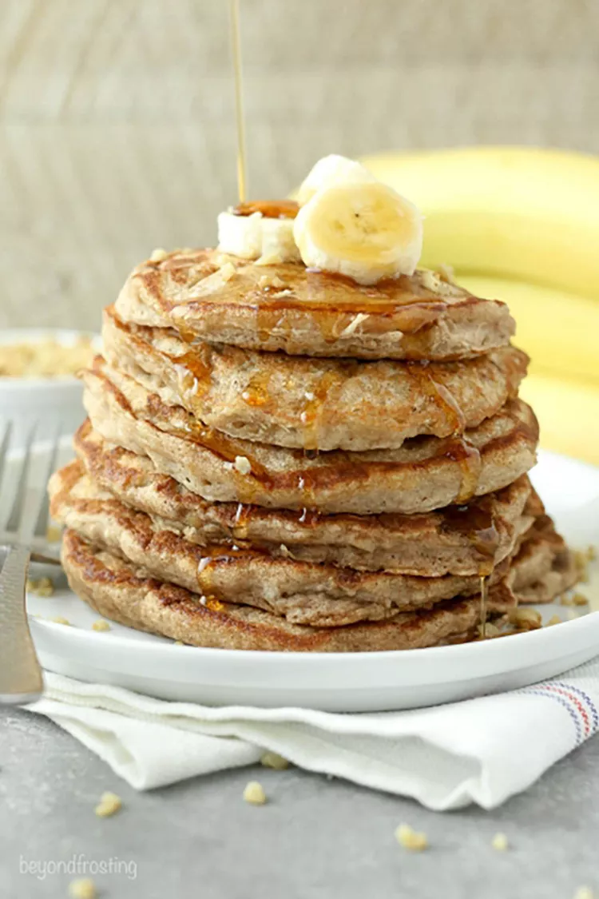

Description
The Best Protein Pancakes! These are super easy with no refined grains or refined sugar. Just oats, banana, and eggs!
Ingredients
- Oat Flour
- Banana
- 1 Egg
Steps
- Run everything through the blender on medium low speed until very well mixed.
- Heat a nonstick griddle to medium high heat. Add batter in small circles about 1/4 cup per pancake. Sprinkle with blueberries or chocolate chips if you want. When the edges start to look dry (2-3 minutes), flip and cook another minute or two on the other side.
- Top with anything you like! I like syrup and peanut butter and chocolate chips.